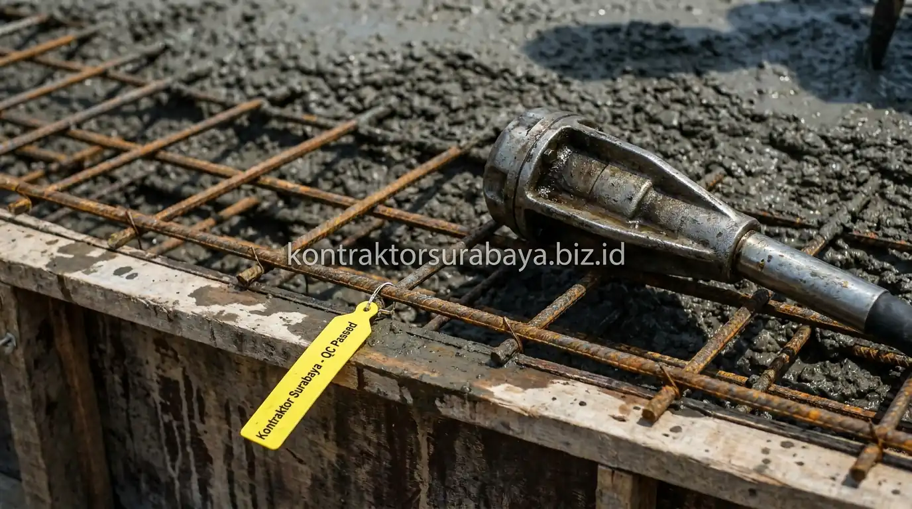

Masalah dak beton lantai 2 yang bocor atau rembes saat musim hujan merupakan keluhan yang paling sering dihadapi oleh pemilik hunian di Surabaya dan sekitarnya. Air hujan yang merembes melalui celah mikro dak tidak hanya merusak keindahan cat plafon gypsum dan instalasi kabel listrik, tetapi dalam jangka panjang memicu karat korosif pada besi tulangan utama yang melemahkan kekuatan struktur bangunan.
Banyak orang mengira kebocoran dak semata-mata dapat diselesaikan hanya dengan menyapukan lapisan cat anti air di permukaan luar. Faktanya, ketahanan kedap air sebuah pelat lantai beton bertulang 90% ditentukan oleh kepatuhan pada Standard Operating Procedure (SOP) saat pelaksanaan cor basah berlangsung. Pelajari standar mutu pengerjaan struktur yang kami terapkan di layanan jasa kontraktor rumah Surabaya agar proyek hunian Anda terbebas dari ancaman kebocoran permanen.
1. Kenapa Dak Beton Rentan Bocor Jika Pengecoran Tidak Sesuai SOP?
Rongga udara akibat pemadatan yang kurang optimal, retak akibat proses pengeringan yang tidak terkontrol, dan bekisting yang tidak rapat adalah beberapa penyebab utama dak beton menjadi rentan bocor apabila pengecoran tidak dilakukan sesuai standar prosedur yang tepat.
Dak beton yang terpapar hujan secara langsung memerlukan tingkat kepadatan dan kerapatan yang lebih tinggi dibanding elemen struktur lain yang terlindungi seperti balok atau kolom dalam ruangan. Kesalahan kecil pada tahap pengecoran—seperti campuran air yang terlalu encer atau getaran vibrator yang terlewat di sudut bekisting—dapat berdampak signifikan terhadap ketahanan dak terhadap rembesan air dalam jangka panjang.
2. Persiapan Bekisting dan Besi Tulangan Sebelum Pengecoran Dak
Bekisting yang rapat tanpa celah, besi tulangan sesuai jarak dan diameter yang direncanakan, penggunaan decking beton untuk menjaga selimut beton, dan pembersihan area dari kotoran adalah empat persiapan penting sebelum pengecoran dak dimulai:
- Bekisting Rapat Tanpa Celah: Penggunaan multipleks film tebal (minimal 12–15 mm) dengan sambungan rapat berisolasi mencegah air semen (pasta semen) merembes bocor ke lantai bawah selama pengecoran berlangsung. Hilangnya air semen membuat beton keropos (honeycomb).
- Besi Tulangan Dua Lapis Berstandar SNI: Pemasangan anyaman besi tulangan (wiremesh atau besi ulir rangkap) harus terikat kawat bendrat secara kencang dengan jarak spasi seragam sesuai dokumen gambar kerja perencana struktur.
- Penggunaan Beton Decking (Tahu Beton): Meletakkan ganjalan beton silinder berkekuatan setara setinggi 2–2,5 cm di bawah besi tulangan. Tahu beton menjaga agar besi tidak menempel langsung pada papan cetakan, menjamin selimut beton tebal yang melindungi besi dari paparan udara pemicu karat.
- Pembersihan Total Area Cetakan: Menyemprotkan air bertekanan atau blower angin untuk membersihkan serpihan kayu gergaji, puntung rokok, dan debu kawat sebelum adukan cor dituangkan.

3. Komposisi Campuran Beton yang Tepat untuk Dak Anti Bocor
Perbandingan semen, pasir, dan kerikil yang sesuai standar, dipadukan kadar air yang tidak berlebihan, menghasilkan campuran beton dengan kepadatan optimal yang lebih tahan terhadap rembesan air dibanding campuran dengan kadar air terlalu tinggi.
Kadar air yang berlebihan dalam campuran beton memang memudahkan adukan dituang dan diratakan tukang, namun saat air tersebut menguap selama proses pengerasan, ia akan meninggalkan jaringan pori-pori kapiler mikro di seluruh ketebalan dak. Pori-pori inilah yang nantinya menjadi jalan bebas hambatan bagi air hujan untuk merembes.
| Parameter Teknis | Pengecoran Konvensional Asal Jadi | SOP Kontraktor Surabaya (Standar SNI) |
|---|---|---|
| Mutu Beton Rencana | K-175 hingga K-200 (tanpa uji slump) | ✅ Minimal K-250 s.d. K-300 (Ready Mix teruji laboratorium) |
| Faktor Air Semen (fas) | Tinggi (> 0,60), adukan sangat encer | ✅ Terkontrol ketat (0,45 – 0,50), padat dan plastis |
| Zat Aditif Kedap Air | Tanpa bahan tambahan apa pun | ✅ Ditambahkan integral waterproofing admixture |
| Ketebalan Pelat Dak | Tipis bergelombang (8–10 cm) | ✅ Rata terukur 12–15 cm sesuai bentang struktur |
| Kemiringan Aliran Air | Rata datar (air mudah menggenang) | ✅ Dibuat kemiringan (slope) 1–2% ke arah pipa drainase |
Kalkulasi volume material dan pemilihan mutu ready-mix yang presisi dapat Anda konsultasikan melalui layanan RAB & estimasi biaya konstruksi kami agar anggaran yang dialokasikan efisien dan tepat sasaran.
4. Teknik Pengecoran dan Pemadatan agar Tidak Timbul Rongga Udara
Pengecoran bertahap tanpa jeda yang terlalu lama, pemadatan menggunakan vibrator, penuangan yang merata ke seluruh area, dan menghindari pengecoran saat hujan adalah empat teknik yang membantu mencegah timbulnya rongga udara pada dak beton:
- Pengecoran Monolit Tanpa Sambungan Dingin (Cold Joint): Pengecoran pelat lantai dan balok anak harus dilakukan secara berkesinambungan (monolit). Jeda penuangan adukan baru di atas adukan yang sudah mengeras lebih dari 90 menit menciptakan garis sambungan dingin yang sangat rentan bocor.
- Pemadatan dengan Vibrator Mekanis: Ujung jarum vibrator dimasukkan tegak lurus ke dalam adukan beton dengan interval 30–50 cm selama 5–15 detik hingga gelembung udara naik ke permukaan. Hindari membiarkan vibrator terlalu lama di satu titik agar kerikil tidak mengendap ke dasar (segregasi).
- Penuangan Bertahap dan Merata: Adukan beton tidak boleh dijatuhkan bebas dari ketinggian lebih dari 1,5 meter untuk mencegah butiran agregat kasar terpisah dari pasta semen.
- Hindari Pengecoran Saat Hujan Deras: Guyuran air hujan yang mengenai permukaan beton cor basah akan merusak rasio air semen di lapisan teratas, menurunkan kekerasan permukaan, dan menyebabkan pengelupasan (dusting).
5. Proses Curing Beton yang Sering Diabaikan
Penyiraman permukaan dak secara berkala selama beberapa hari setelah pengecoran membantu proses pengeringan beton berlangsung merata, mencegah retak akibat penguapan air yang terlalu cepat pada permukaan. Reaksi kimia antara air dan semen (hidrasi) membutuhkan kelembapan yang terjaga agar kristal beton terbentuk sempurna dan mencapai kekuatan tekan maksimal.
Proses curing yang diabaikan sering menjadi penyebab utama munculnya retak rambut pada permukaan dak. Di iklim terik kota Surabaya, beton yang terpapar panas matahari langsung tanpa penyiraman akan mengalami penguapan air mendadak, memicu penyusutan plastis (plastic shrinkage cracking). Standar SOP kami mewajibkan pembendungan air setinggi 2–3 cm atau penutupan permukaan dak dengan karung goni basah minimal selama 7 hingga 14 hari paska cor.
6. Aplikasi Waterproofing Tambahan Setelah Beton Mengering
Lapisan waterproofing tambahan yang diaplikasikan setelah beton benar-benar kering memberi perlindungan ekstra terhadap potensi rembesan yang mungkin masih terjadi meski proses pengecoran sudah dilakukan dengan baik. Waterproofing berfungsi sebagai benteng pertahanan kedua (secondary barrier) yang melapisi pori-pori mikro permukaan dak.
Aplikasi pelapis anti bocor—baik berupa semen fleksibel 2 komponen, membran bakar aspal, maupun polyurethane (PU) elastis—baru boleh dikerjakan setelah beton berumur minimal 28 hari dan kering sempurna. Pemasangan serat fiber reinforcement (kasa penguat) pada pertemuan sudut antara lantai dak dan dinding pembatas (chamfer / fillet) wajib dilakukan untuk mencegah kebocoran akibat pergerakan muai-susut bangunan.
7. Kesalahan Umum saat Pengecoran Dak yang Menyebabkan Bocor dan Retak Rambut
Berdasarkan evaluasi tim engineer di lapangan, 4 kesalahan fatal yang paling sering dijumpai pada proyek rumah tinggal tanpa pengawasan profesional meliputi:
- Menambahkan Air Berlebihan di Molen: Tukang sering menambahkan air secara diam-diam agar adukan lebih encer dan ringan ditarik jidar. Hal ini secara drastis menurunkan kuat tekan beton hingga 40% dan menciptakan pori rembesan luas.
- Pemadatan Hanya Mengandalkan Ketukan Kayu: Tidak membawa alat vibrator dan hanya menusuk adukan dengan bambu atau mengetuk bekisting dari bawah, menyisakan rongga sarang lebah tersembunyi di sekitar besi balok.
- Melepas Perancah Penyangga Terlalu Dini: Membongkar tiang steger perancah sebelum beton mencapai umur matang menyebabkan lendutan (defleksi) pelat lantai yang memicu retak struktur mikro.
- Melupakan Sudut Chamfer dan Kemiringan Pipa Talang: Permukaan dak yang dibuat datar tanpa kemiringan membuat air hujan menggenang berhari-hari (ponding water), mempercepat degradasi lapisan waterproofing.
"Dak beton yang kokoh dan anti bocor bukanlah hasil dari kebetulan, melainkan buah dari disiplin teknis: mulai dari kerapatan bekisting, getaran vibrator yang merata, hingga perawatan curing air yang konsisten setiap harinya." — Erlang Sinatrya, Lead Project Engineer Kontraktor Surabaya
Pengecoran dak beton yang mengikuti SOP secara konsisten membantu mencegah masalah kebocoran yang sering muncul setelah musim hujan pertama. Jika Anda berencana membangun rumah baru dari nol, pelajari cakupan konstruksi lengkap kami pada halaman jasa kontraktor rumah, atau bila dak rumah eksisting Anda saat ini sudah terlanjur mengalami retak dan rembes, konsultasikan solusinya bersama tim jasa renovasi rumah kami. Lihat juga dokumentasi proyek nyata kami di halaman galeri portofolio serta direktori lengkap layanan konstruksi kami.